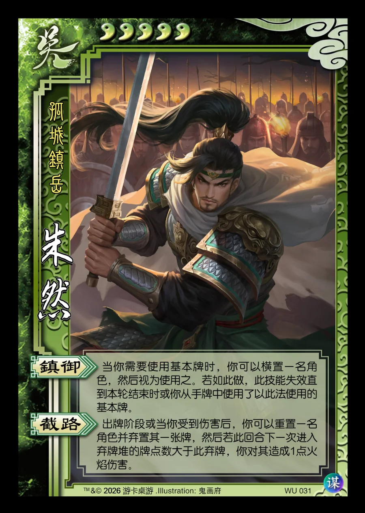

点击卡面查看大图
吴
谋朱然
♥5孤城镇岳
镇御
当你需要使用基本牌时，你可以横置一名角色，然后视为使用之。若如此做，此技能失效直到本轮结束时或你从手牌中使用了以此法使用的基本牌。
截路
出牌阶段或当你受到伤害后，你可以重置一名角色并弃置其一张牌，然后若此回合下一次进入弃牌堆的牌点数大于此弃牌，你对其造成1点火焰伤害。

点击卡面查看大图
孤城镇岳
当你需要使用基本牌时，你可以横置一名角色，然后视为使用之。若如此做，此技能失效直到本轮结束时或你从手牌中使用了以此法使用的基本牌。
出牌阶段或当你受到伤害后，你可以重置一名角色并弃置其一张牌，然后若此回合下一次进入弃牌堆的牌点数大于此弃牌，你对其造成1点火焰伤害。